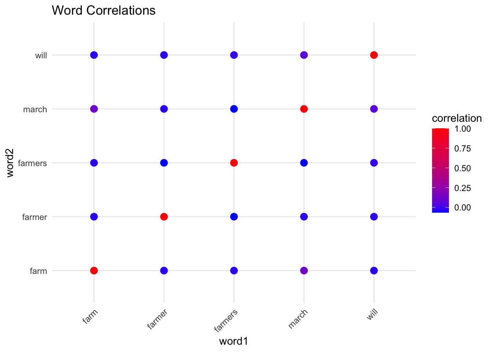

# I scraped and curated this dataset, with the help of Dr Zoe LeBlanc
data <- read.csv("/Users/syamantakbasu91/Desktop/IS 407 assignments/My Data Science Blog_Syamantak Basu/PARI Compiled and Filtered.csv")This is a post with executable code.
The dataset for this code is derived from the website of the public non-profit citizen-run archive known as the People’s Archive of Rural India (PARI). I collected this dataset by writing a code scraper in Python, with the help of I-School professor Dr Zoe LeBlanc, for the class “Culture at Scale.” The scraper is designed to collect the headlines of all the stories gathered under one category on the website known as “Farming and its Crisis: The Troubled World of Agriculture.” The scraper collected 348 stories hosted in the category between July 18, 2014 and April 29, 2023 (since my analyses were conducted right after that date). The website, and in particular this category, may be found at https://ruralindiaonline.org/en/stories/categories/farming-and-its-crisis/
The website is open to all contributors, with stories vetted by a team of volunteer editors, and collects stories directly from the people of rural India. It is therefore one of India’s most important citizen archives which amplifies voices from the margins. The material is licensed under a Creative Commons CC 4.0 license, and credits ownership first to the people whose stories are being told, and thereafter to those recording and submitting them. The stories are available in multiple languages, so the scraper was modified to only collect data in English.
I used this as a counterpoint to the Indian newspaper headlines dataset (which compiles headlines from India’s major English newspaper), which is why I chose the words farming, digital and poverty for the correlation analysis in the Indian News Headlines Dataset.
Photo credit: M. Palani Kumar
# Setting a CRAN repository directly for the tm package
cran_mirror <- "https://cloud.r-project.org/"
# Installing the 'tm' package with the specified CRAN mirror
install.packages("tm", repos = cran_mirror)
The downloaded binary packages are in
/var/folders/8b/kr1x3k6n1gs6fzmv7qjyzx5h0000gn/T//RtmpCkVekm/downloaded_packages# Loading the necessary libraries
library(tm)Loading required package: NLPlibrary(dplyr)
Attaching package: 'dplyr'The following objects are masked from 'package:stats':
filter, lagThe following objects are masked from 'package:base':
intersect, setdiff, setequal, union# Caption_text is the column which has the titles of the stories
text_data <- data$caption_text
# Tokenizing the text
corpus <- Corpus(VectorSource(text_data))
corpus <- tm_map(corpus, content_transformer(tolower))Warning in tm_map.SimpleCorpus(corpus, content_transformer(tolower)):
transformation drops documentscorpus <- tm_map(corpus, removePunctuation)Warning in tm_map.SimpleCorpus(corpus, removePunctuation): transformation drops
documentscorpus <- tm_map(corpus, removeNumbers)Warning in tm_map.SimpleCorpus(corpus, removeNumbers): transformation drops
documentscorpus <- tm_map(corpus, removeWords, stopwords("english"))Warning in tm_map.SimpleCorpus(corpus, removeWords, stopwords("english")):
transformation drops documentscorpus <- tm_map(corpus, stripWhitespace)Warning in tm_map.SimpleCorpus(corpus, stripWhitespace): transformation drops
documents# Creating a DocumentTermMatrix
dtm <- DocumentTermMatrix(corpus)
# Converting the DocumentTermMatrix to a matrix
matrix <- as.matrix(dtm)
# Calculating the word frequencies
word_freq <- colSums(matrix)
# Sorting the word frequencies in descending order
sorted_freq <- sort(word_freq, decreasing = TRUE)
# Finding the top 5 words besides the single quote
top_words <- head(sorted_freq[!names(sorted_freq) %in% "‘"], 5) #In the first iteration, "'" was the most frequent word, so I modified the code to remove it and then show the next five words
# Printing the top 5 words
print(top_words)farmers farm will farmer march
41 16 12 11 11 # Visualizing the top 5 occurring words
# Loading the ggplot library
library(ggplot2)
Attaching package: 'ggplot2'The following object is masked from 'package:NLP':
annotate# Creating a data frame for the bar plot
top_words_df <- data.frame(word = names(top_words), frequency = top_words)
# Defining a color palette for the bars
colors <- rainbow(length(top_words_df$word))
# Plotting a bar graph with different colors for each bar
ggplot(top_words_df, aes(x = word, y = frequency, fill = word)) +
geom_bar(stat = "identity") +
xlab("Word") +
ylab("Frequency") +
ggtitle("Top 5 Most Occurring Words") +
scale_fill_manual(values = colors) +
theme_minimal() +
theme(axis.text.x = element_text(angle = 45, hjust = 1))
# Finding the correlation coefficients of the top 5 words
# Calculating the correlations between the top 5 words
word_correlations <- cor(matrix[, names(top_words)])
# Printing the correlation matrix
print(word_correlations) farmers farm will farmer march
farmers 1.00000000 -0.03766696 -0.01866649 -0.06602435 -0.06602435
farm -0.03766696 1.00000000 -0.03831188 -0.03966179 0.11718257
will -0.01866649 -0.03831188 1.00000000 -0.03153000 0.05159454
farmer -0.06602435 -0.03966179 -0.03153000 1.00000000 -0.03264095
march -0.06602435 0.11718257 0.05159454 -0.03264095 1.00000000# Creating a scatterplot with color gradients to map the correlations between the top 5 words
install.packages("tidyr", repos = cran_mirror)
The downloaded binary packages are in
/var/folders/8b/kr1x3k6n1gs6fzmv7qjyzx5h0000gn/T//RtmpCkVekm/downloaded_packageslibrary(tidyr)
# Creating a data frame from the correlation matrix
correlation_df <- as.data.frame(word_correlations)
correlation_df$word1 <- rownames(correlation_df)
rownames(correlation_df) <- NULL
correlation_df <- gather(correlation_df, key = "word2", value = "correlation", -word1)
# Creating scatterplots for each correlation
scatterplots <- ggplot(correlation_df, aes(x = word1, y = word2, color = correlation)) +
geom_point(size = 3) +
scale_color_gradient(low = "blue", high = "red") +
labs(title = "Word Correlations") +
theme_minimal() +
theme(axis.text.x = element_text(angle = 45, hjust = 1))
# Displaying the scatterplots
print(scatterplots)